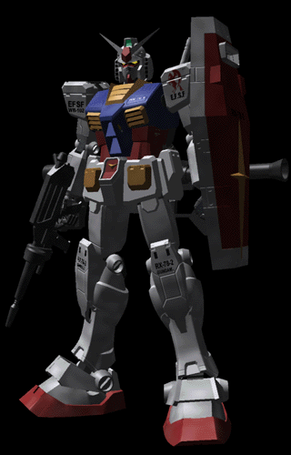
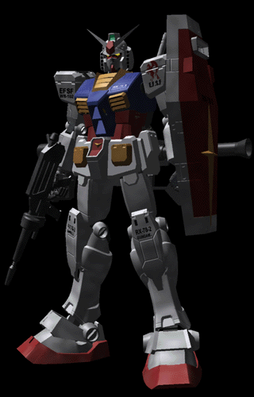

Amuro Ray
Information
Story
Age : 15 (at first appearance)
gender : male
Height : 168cm
Nationality : Earth Federation
Birthday : 64/November/4th
Favorite food : Hamburger
Hobby : Play with machine
Personality : Introverted
Amuro Ray is a young civilian who becomes the pilot of the powerful Gundam mobile suit in the anime series "Mobile Suit Gundam," fighting against the Zeon forces and becoming a symbol of hope.
 
